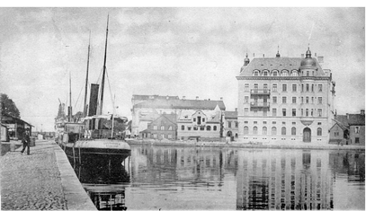

Jönköpings historia!
Sveriges historia är beskrivningen av Sverige i det förflutna, och av det som innan statsbildningen på medeltiden skulle komma att bli Sverige.
Det område som idag utgör södra Sverige var sannolikt bebott i de perioder under senaste istiden när landisen inte täckte hela området. Historiska kronologier inleds dock vanligen med bosättningen av Skandinavien när isen drog sig tillbaka för gott, vilket tog sin början för omkring 13 000 år sedan.
Landet bosattes först söderifrån via vad som idag är Danmark, senare även från andra väderstreck, och hela dagens Sverige var befolkat några tusental år senare.
En stor förändring inträffade när den jordbrukande trattbägarkulturen inflyttade med början för cirka 6200 år sedan, liksom med bronsålderns och järnålderns inträde.
Namnen Svearike (Swēorice) och svitjod ("sveafolket") förekommer första gången i det anglosaxiska Beowulfkvädet (i en handskrift bevarad från 1000-talet)[1], och förmodas ursprungligen ha använts som benämning på en statsbildning av okänd storlek med centrum i Gamla Uppsala, styrd av svear (folkgrupp troligen första gången omnämnd i skrift av den romerske historikern Tacitus år 98 e.Kr. som "svioner").
Uppgift 3.3
uppgift 3.3 gick up på att copiera en "hemsida" med hjälp av ett färdig html document och en bild på den färdiga sisan. uppgiften var alltså att med hjälp av css återskapa en exakt kopia av bilden, genon att strukturera upp och färglägga sidan.